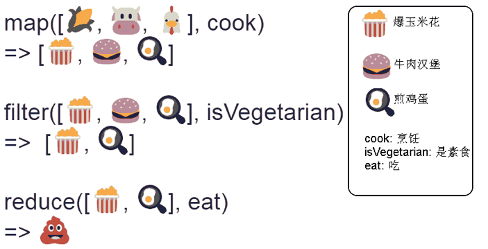

摘要： 函数式编程入门。
Fundebug经授权转载，版权归原作者所有。
函数式编程在前端已经成为了一个非常热门的话题。在最近几年里，我们看到非常多的应用程序代码库里大量使用着函数式编程思想。
本文将略去那些晦涩难懂的概念介绍，重点展示在 JavaScript 中到底什么是函数式的代码、声明式与命令式代码的区别、以及常见的函数式模型都有哪些？想阅读更多优质文章请猛戳GitHub博客。
函数式编程是一种编程范式，主要是利用函数把运算过程封装起来，通过组合各种函数来计算结果。函数式编程意味着你可以在更短的时间内编写具有更少错误的代码。举个简单的例子，假设我们要把字符串 functional programming is great 变成每个单词首字母大写，我们可以这样实现：
var string = 'functional programming is great';
var result = string
.split(' ')
.map(v => v.slice(0, 1).toUpperCase() + v.slice(1))
.join(' ');上面的例子先用 split 把字符串转换数组，然后再通过 map 把各元素的首字母转换成大写，最后通过 join 把数组转换成字符串。 整个过程就是 join(map(split(str))),体现了函数式编程的核心思想： 通过函数对数据进行转换。
由此我们可以得到，函数式编程有两个基本特点：
//命令式
var CEOs = [];
for(var i = 0; i < companies.length; i++){
CEOs.push(companies[i].CEO)
}
//声明式
var CEOs = companies.map(c => c.CEO);从上面的例子中，我们可以看到声明式的写法是一个表达式，无需关心如何进行计数器迭代，返回的数组如何收集，它指明的是做什么，而不是怎么做。函数式编程的一个明显的好处就是这种声明式的代码，对于无副作用的纯函数，我们完全可以不考虑函数内部是如何实现的，专注于编写业务代码。
指调用函数时不会修改外部状态，即一个函数调用 n 次后依然返回同样的结果。
var a = 1;
// 含有副作用，它修改了外部变量 a
// 多次调用结果不一样
function test1() {
a++
return a;
}
// 无副作用，没有修改外部状态
// 多次调用结果一样
function test2(a) {
return a + 1;
}指一个函数只会用到传递给它的变量以及自己内部创建的变量，不会使用到其他变量。
var a = 1;
var b = 2;
// 函数内部使用的变量并不属于它的作用域
function test1() {
return a + b;
}
// 函数内部使用的变量是显式传递进去的
function test2(a, b) {
return a + b;
}指的是一个变量一旦创建后，就不能再进行修改，任何修改都会生成一个新的变量。使用不可变变量最大的好处是线程安全。多个线程可以同时访问同一个不可变变量，让并行变得更容易实现。 由于 JavaScript 原生不支持不可变变量，需要通过第三方库来实现。 (如 Immutable.js，Mori 等等)
var obj = Immutable({ a: 1 });
var obj2 = obj.set('a', 2);
console.log(obj); // Immutable({ a: 1 })
console.log(obj2); // Immutable({ a: 2 })我们常说函数是JavaScript的"第一等公民"，指的是函数与其他数据类型一样，处于平等地位，可以赋值给其他变量，也可以作为参数，传入另一个函数，或者作为别的函数的返回值。下文将要介绍的闭包、高阶函数、函数柯里化和函数组合都是围绕这一特性的应用
如果一个函数引用了自由变量，那么该函数就是一个闭包。何谓自由变量？自由变量是指不属于该函数作用域的变量(所有全局变量都是自由变量，严格来说引用了全局变量的函数都是闭包，但这种闭包并没有什么用，通常情况下我们说的闭包是指函数内部的函数)。
闭包的形成条件：
闭包的用途:
可以定义一些作用域局限的持久化变量，这些变量可以用来做缓存或者计算的中间量等。
// 简单的缓存工具
// 匿名函数创造了一个闭包
const cache = (function() {
const store = {};
return {
get(key) {
return store[key];
},
set(key, val) {
store[key] = val;
}
}
}());
console.log(cache) //{get: ƒ, set: ƒ}
cache.set('a', 1);
cache.get('a'); // 1上面例子是一个简单的缓存工具的实现，匿名函数创造了一个闭包，使得 store 对象 ，一直可以被引用，不会被回收。
闭包的弊端:持久化变量不会被正常释放，持续占用内存空间，很容易造成内存浪费，所以一般需要一些额外手动的清理机制。
函数式编程倾向于复用一组通用的函数功能来处理数据，它通过使用高阶函数来实现。高阶函数指的是一个函数以函数为参数，或以函数为返回值，或者既以函数为参数又以函数为返回值。
高阶函数经常用于：
JavaScript 语言是原生支持高阶函数的, 例如Array.prototype.map，Array.prototype.filter 和 Array.prototype.reduce 是JavaScript中内置的一些高阶函数，使用高阶函数会让我们的代码更清晰简洁。
map() 方法创建一个新数组，其结果是该数组中的每个元素都调用一个提供的函数后返回的结果。map 不会改变原数组。
假设我们有一个包含名称和种类属性的对象数组，我们想要这个数组中所有名称属性放在一个新数组中，如何实现呢？
// 不使用高阶函数
var animals = [
{ name: "Fluffykins", species: "rabbit" },
{ name: "Caro", species: "dog" },
{ name: "Hamilton", species: "dog" },
{ name: "Harold", species: "fish" },
{ name: "Ursula", species: "cat" },
{ name: "Jimmy", species: "fish" }
];
var names = [];
for (let i = 0; i < animals.length; i++) {
names.push(animals[i].name);
}
console.log(names); //["Fluffykins", "Caro", "Hamilton", "Harold", "Ursula", "Jimmy"]// 使用高阶函数
var animals = [
{ name: "Fluffykins", species: "rabbit" },
{ name: "Caro", species: "dog" },
{ name: "Hamilton", species: "dog" },
{ name: "Harold", species: "fish" },
{ name: "Ursula", species: "cat" },
{ name: "Jimmy", species: "fish" }
];
var names = animals.map(x=>x.name);
console.log(names); //["Fluffykins", "Caro", "Hamilton", "Harold", "Ursula", "Jimmy"]filter() 方法会创建一个新数组，其中包含所有通过回调函数测试的元素。filter 为数组中的每个元素调用一次 callback 函数， callback 函数返回 true 表示该元素通过测试，保留该元素，false 则不保留。filter 不会改变原数组，它返回过滤后的新数组。
假设我们有一个包含名称和种类属性的对象数组。 我们想要创建一个只包含狗（species: "dog"）的数组。如何实现呢？
// 不使用高阶函数
var animals = [
{ name: "Fluffykins", species: "rabbit" },
{ name: "Caro", species: "dog" },
{ name: "Hamilton", species: "dog" },
{ name: "Harold", species: "fish" },
{ name: "Ursula", species: "cat" },
{ name: "Jimmy", species: "fish" }
];
var dogs = [];
for (var i = 0; i < animals.length; i++) {
if (animals[i].species === "dog") dogs.push(animals[i]);
}
console.log(dogs); // 使用高阶函数
var animals = [
{ name: "Fluffykins", species: "rabbit" },
{ name: "Caro", species: "dog" },
{ name: "Hamilton", species: "dog" },
{ name: "Harold", species: "fish" },
{ name: "Ursula", species: "cat" },
{ name: "Jimmy", species: "fish" }
];
var dogs = animals.filter(x => x.species === "dog");
console.log(dogs); // {name: "Caro", species: "dog"}
// { name: "Hamilton", species: "dog" }reduce 方法对调用数组的每个元素执行回调函数，最后生成一个单一的值并返回。 reduce 方法接受两个参数：1）reducer 函数（回调），2）一个可选的 initialValue。
假设我们要对一个数组的求和：
// 不使用高阶函数
const arr = [5, 7, 1, 8, 4];
let sum = 0;
for (let i = 0; i < arr.length; i++) {
sum = sum + arr[i];
}
console.log(sum);//25// 使用高阶函数
const arr = [5, 7, 1, 8, 4];
const sum = arr.reduce((accumulator, currentValue) => accumulator + currentValue,0);
console.log(sum)//25我们可以通过下图，形象生动展示三者的区别：

柯里化又称部分求值，柯里化函数会接收一些参数，然后不会立即求值，而是继续返回一个新函数，将传入的参数通过闭包的形式保存，等到被真正求值的时候，再一次性把所有传入的参数进行求值。
// 普通函数
function add(x,y){
return x + y;
}
add(1,2); // 3
// 函数柯里化
var add = function(x) {
return function(y) {
return x + y;
};
};
var increment = add(1);
increment(2);// 3这里我们定义了一个 add 函数，它接受一个参数并返回一个新的函数。调用 add 之后，返回的函数就通过闭包的方式记住了 add 的第一个参数。那么，我们如何来实现一个简易的柯里化函数呢？
function curryIt(fn) {
// 参数fn函数的参数个数
var n = fn.length;
var args = [];
return function(arg) {
args.push(arg);
if (args.length < n) {
return arguments.callee; // 返回这个函数的引用
} else {
return fn.apply(this, args);
}
};
}
function add(a, b, c) {
return [a, b, c];
}
var c = curryIt(add);
var c1 = c(1);
var c2 = c1(2);
var c3 = c2(3);
console.log(c3); //[1, 2, 3]由此我们可以看出，柯里化是一种“预加载”函数的方法，通过传递较少的参数，得到一个已经记住了这些参数的新函数，某种意义上讲，这是一种对参数的“缓存”，是一种非常高效的编写函数的方法！
前面提到过，函数式编程的一个特点是通过串联函数来求值。然而，随着串联函数数量的增多，代码的可读性就会不断下降。函数组合就是用来解决这个问题的方法。
假设有一个 compose 函数，它可以接受多个函数作为参数，然后返回一个新的函数。当我们为这个新函数传递参数时，该参数就会「流」过其中的函数，最后返回结果。
//两个函数的组合
var compose = function(f, g) {
return function(x) {
return f(g(x));
};
};
//或者
var compose = (f, g) => (x => f(g(x)));
var add1 = x => x + 1;
var mul5 = x => x * 5;
compose(mul5, add1)(2);// =>15 给大家推荐一个好用的BUG监控工具Fundebug，欢迎免费试用！
Fundebug专注于JavaScript、微信小程序、微信小游戏、支付宝小程序、React Native、Node.js和Java线上应用实时BUG监控。 自从2016年双十一正式上线，Fundebug累计处理了20亿+错误事件，付费客户有阳光保险、核桃编程、荔枝FM、掌门1对1、微脉、青团社等众多品牌企业。欢迎大家免费试用！